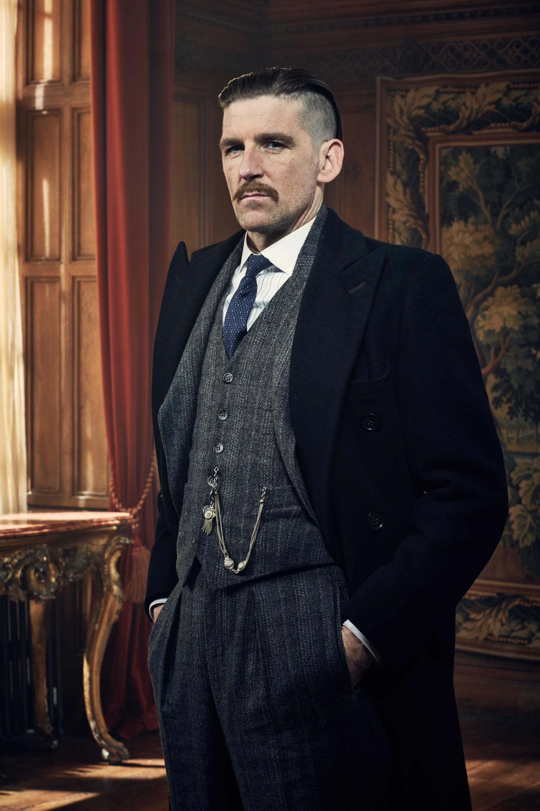

Bien qu'étant l'ainé des Shelby, Arthur n'est pas le leader des Peaky Blinders,
mais le bras droit de Thomas. Il a combattu pendant la Première Guerre Mondiale avec ce dernier.
Il souffre de nombreux traumatismes liés aux obus et de stress post-traumatique liés à son expérience de la guerre.
Il est sujet à de violents accès de colère et de sautes d'humeur qui s'expriment parfois par des tentatives de suicide.
Sous l'influence de Linda, il devient de plus en plus religieux et se montre plus calme et compatissant.
Souhaitant le remettre sur le droit chemin, elle l'incite à arrêter de boire et de se battre,
ce qui lui vaut des moqueries de la part des autres membres des Peaky Blinders.
Cependant sa nature de combattant et ses mœurs dissolues reprennent vite le dessus.